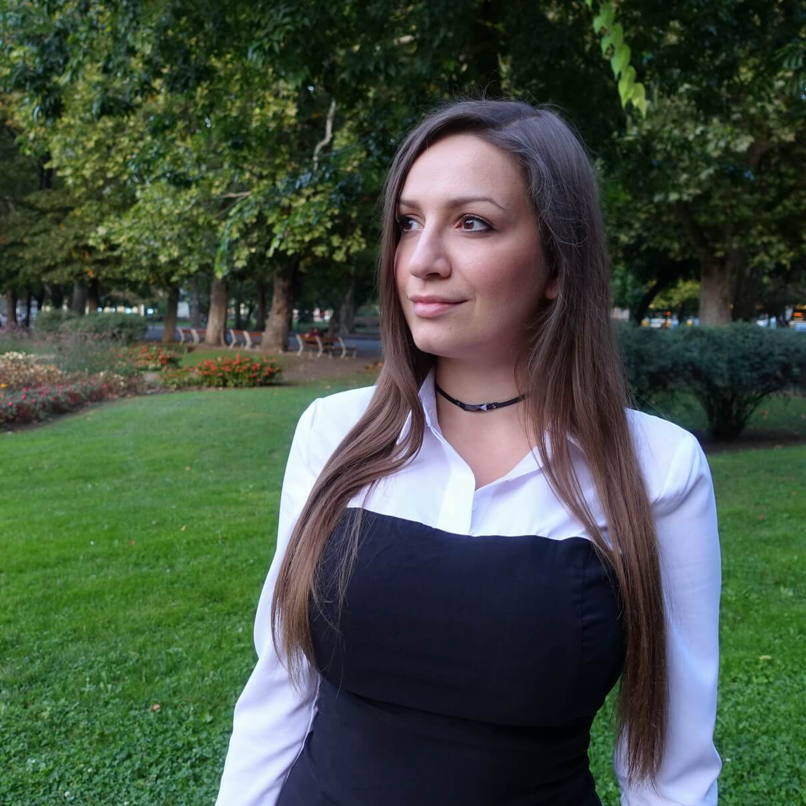

Statement
Erzsebet Kis-Nagy is an emerging artist, living in Budapest, Hungary. The sources of inspiration to her drawings and paintings are mainly landscapes, cityscapes and nature.
Her recent cylindrical drawings try to capture the perpetual quality of certain places. Her aim with this project is also to propose an eco-friendly way of creating art by reusing household waste as a surface to draw or paint on. These drawings have been selected for exhibitions like Derwent Art Prize and Wales Contemporary in 2020.
In her paintings, she seeks to share her experience of calm and beauty in the places she visits with an emphasis on landscapes, flora and architecture.

Selected exhibitions
| 2021 | WALES CONTEMPORARY, Oxo Tower Gallery, London |
| 2020 | WALES CONTEMPORARY, Waterfront Gallery, Milford Haven, Wales |
| 2020 | TALP OPEN ART COMPETITION, virtual exhibition |
| 2020 | DERWENT ART PRIZE, Oxo Tower Gallery, London and 20 rue Saint Claude, Paris, France (postponed) |
| 2019 | ZSILIP ART CENTER Flora & Fauna, Budapest, Hungary |